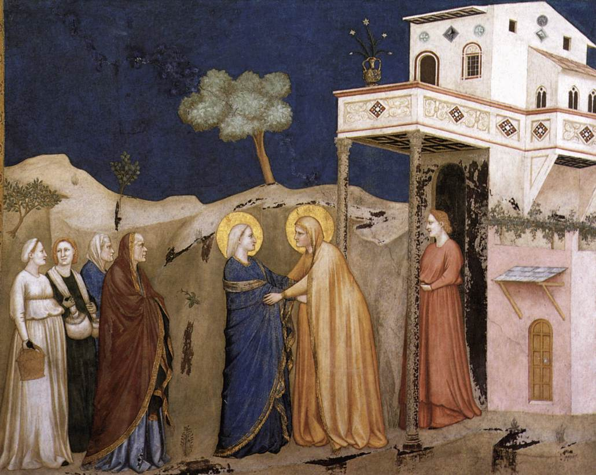
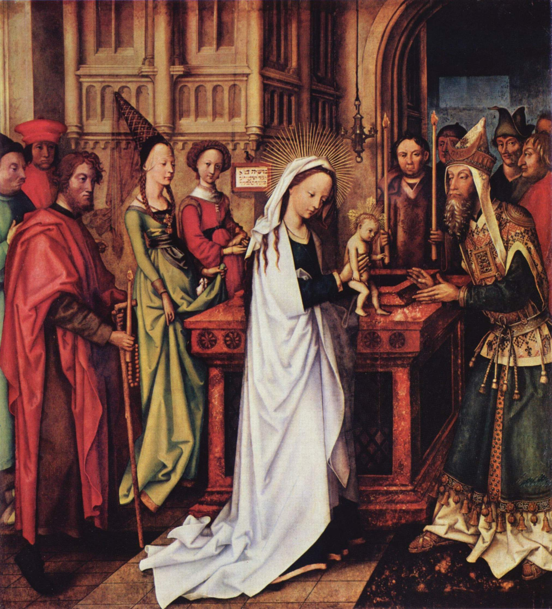
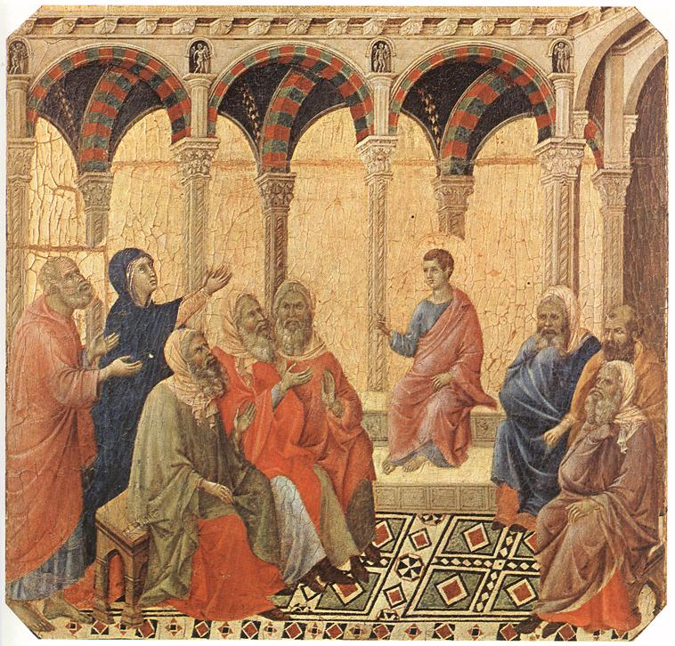

1. The Annunciation
And when the angel had come to her, he said, "Hail, full of grace, the Lord is with you." (Luke 1, 28)
2. The Visitation

And Elizabeth was filled with the Holy Spirit, and cried out with a loud voice, saying,
"Blessed are you among women and blessed is the fruit of your womb!" (Luke 1, 41-42)
3. The Birth of Jesus
And she brought forth her first-born son, and wrapped him in swaddling clothes,
and laid him in a manger, because there was no room for them in the inn. (Luke 2, 7)
4. The Presentation

And when the days of her purification were fulfilled according to the Law of Moses,
they took him up to Jerusalem to present Him to the Lord. (Luke 2, 22-23)
5. Finding Jesus in the Temple

And it came to pass after three days, that they found him in the temple,
sitting in the midst of teachers, both listening to them and asking them questions. (Luke 2, 46)